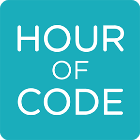

Programming Lab (Hour of Code) Assignment

Hour of Code
The Hour of Code is a global movement to spread awareness and to encourage hands-on experience in writing code to millions of students in 180+ countries. Even though there is a designated "Hour of Code" week each year, the coding resources are available year round. In this lab, we will use some of these same resources to give you a chance to better understand what coding is and to allow you a chance to roll up your sleeves and sling some code for yourself.
Learning Activities
Assignment Tasks
- Join my Hour of Code class in Khan Academy. If you happen to already have a KhanAcademy account, then you can just join my class by entering J23WH234 for the Join a Class option.
- Follow the the steps provided in the left-hand column all the way til the end.
Submitting Your Work
- By joining my code classroom in Khan Academy, I will be able to track your progress and capture your score on the Due Date for this assignment.